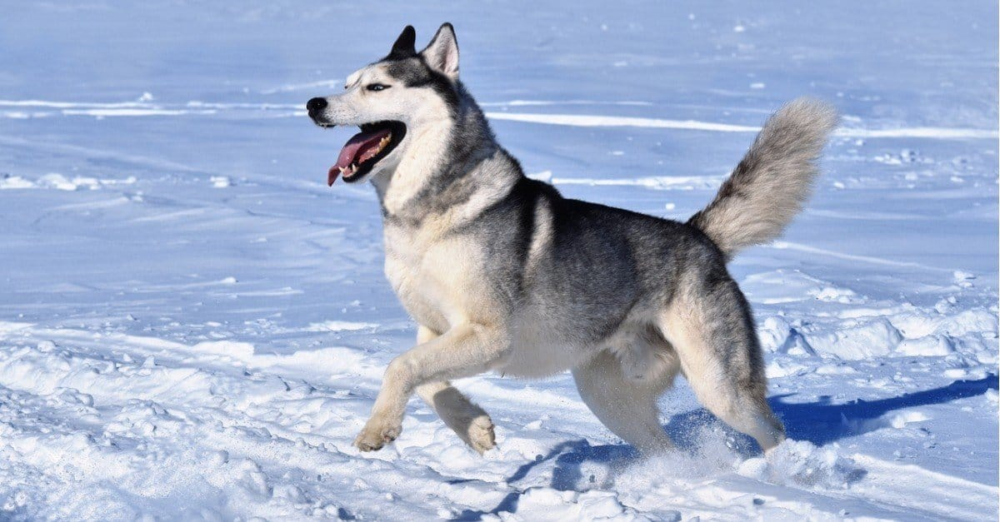

Although it should come as no surprise to most people who study dangerous dog breeds, the pit bull is the most dangerous dog. While not a breed recognized by the American Kennel Club, “pit bull” is a catch-all used to include bulldogs and terriers rather than a single dog breed. According to the aforementioned study, over a period of 13 years, the pit bull was responsible for 284 deaths, roughly 2/3 of all fatal dog attacks in the United States. That is a rather discouraging statistic when one considers that only 6% of all dogs in the United States are pit bulls. They were bred to be dangerous for generations as hunting dogs and fighting dogs, so it is no surprise these dogs continue to be a threat to this day. Another reason pit bulls are the most dangerous dog breed is that they have large bodies (weighing up to 80 pounds), strong jaws, and great killer instincts. Human beings and other animals don’t stand a chance against a pit bull. Still, many people insist these animals are merely a product of their upbringing and have loving pit bulls as pets.
Before pit bulls came into the public consciousness as highly dangerous animals, rottweilers were often considered the most dangerous dog breed in the world. These dogs can grow up to 25 inches tall and weigh 120 pounds or more and still be healthy. They have large bodies and a temperament that can turn foul in some situations. Specifically, the dog will become very friendly and protective of those in its household, but that protection is not extended to visitors. Rottweilers are well known to be powerful, protective, and loyal, and can be dangerous when they attack intruders. Although Rottweilers are not a threat to the family, they are usually very aggressive when they protect their owners. During the same interim as we discussed with the pit bull, the rottweiler was responsible for 45 fatal attacks, comprising 10% of all fatal attacks that were witnessed during that period in the United States. Rottweilers also have a dreadfully powerful bite that they know how to use to great effect.
German shepherds are working dogs that have been put to use in militaries and police forces in recent decades. The reasons for this choice are obvious: these are robust, intelligent, powerful, and dangerous dogs that can inflict deadly attacks on people. Weighing about 90 pounds and standing over 2 feet tall, the German shepherd breed is perfect at curtailing human threats. The generational breeding into working dogs has resulted in a highly effective tool. Unfortunately, as far as aggressive dog breeds go, German shepherds excel in aggression and territoriality, and they were the cause of 20 deaths (about 5% of all dog bite deaths) and numerous non-fatal biting incidents. The only silver lining, in this case, is that this breed is highly trainable.
Unlike their British counterparts, the American bulldog is still a powerful working animal that has not been overbred to uselessness. Standing just shy of 30 inches high, these dogs can pack on muscle and weigh over 100 pounds. They’re thick, strong dogs that are very dangerous when they attack. During the 13-year study, American bulldogs were responsible for 15 deaths, about 3.5% of all fatal attacks. Although that is not a large number, it’s significant when one considers that this breed is rarely mentioned alongside some of the other dangerous dogs. Make no mistake — this breed has a powerful bite and the ability to jump high enough and hard enough to knock an adult flat on their back.
Devoted, alert, and fearless are all terms that apply to the bullmastiff breed, and that is why people value them as pets. They’ll protect your home and yard, but they might not enjoy the presence of outsiders, and that behavior has to be curbed at a young age to prevent attacks. Although attacks by bullmastiffs are relatively infrequent, the fact is that these dogs are so large that when they do attack a person or another animal, the damage is severe. They can reach 130 pounds and stand 27 inches tall or more. These dogs were responsible for 3.2% of all fatal attacks that occurred over the 13 years of the study, representing just 14 deaths. However, when you consider the relative rarity of the animal in the U.S., it’s a sign that the dog is dangerous.

Siberian huskies are valued for their wolf-like looks. You shouldn’t be too surprised to find out that dogs sharing looks with wild animals behave a little like them. Huskies were used as sled dogs in the coldest reaches of Canada and the United States. Although they weigh only 60 pounds, they’re strong for their size and very independent animals. These dogs are highly motivated by catching prey. Most animals that are smaller than them, including humans, can look like prey to them. In this case, it’s their instincts for survival that get them in the most trouble. Huskies were responsible for 3% of all fatal attacks in the study we’ve cited. Although these animals are friendly most of the time, they have been known to attack children and adults that challenge them even with no history of aggression.
The Labrador retriever is a hunting dog that was bred to work alongside human beings. They’re fairly large dogs, weighing up to 80 pounds and only standing about 2 feet tall. Labradors are often prized as family-friendly dogs, and they make poor guard dogs for their trustworthy nature. So, how is it that Labradors became responsible for 2.1% of all the deaths in the study? Most of the time, it’s believed that the Labrador is defending its territory or even its food. Sometimes, humans inadvertently back their dog into a corner and make it feel threatened when they’re correcting its behavior. Either way, Labradors are not highly aggressive animals, but they can topple over or severely bite humans.
Boxers are interesting dogs because they are simultaneously incredibly dopey in terms of their looks, but they were bred to be working dogs. These dogs have a lot of energy, and they can weigh up to 80 pounds of muscle. When you combine their physical capabilities with their protective nature, it’s easy to see why boxers can be so troublesome. If someone the dog doesn’t trust does something they perceive as threatening near their owner, the dog could capably attack. Boxers only caused 7 deaths in recent years, but they have a propensity for non-fatal bites as well. Like other dangerous breeds, you should only get this breed if you know how to handle and train a dog.
The Doberman pinscher has an iconic silhouette that is easily identified by the cropped ears, straight back, and look of constant alertness. These animals have been used as guard dogs, a job they performed so well that they have become almost synonymous with the job, German shepherds aside. The name “pinscher” comes from a German term that refers to their habit of attacking and biting prey. This is another breed that was bred for generations to become perfect attack dogs. It should not be any surprise that they are quite dangerous. Dobermans were responsible for about 6 deaths at the time of the study as well as many biting incidents. While not as prolific in the number of deaths as other dogs, the breed is dangerous and capable of inflicting serious injuries. They stand between 2 feet and 3 feet tall and weigh upwards of 80 pounds.
Lastly, we have the Alaskan Malamute, a dog that is strikingly similar to the Siberian husky. The main difference is that the Alaskan Malamute is much larger than their wolf-life counterparts. These dogs can weigh almost 90 pounds and stand 26 inches tall, so they are quite large and powerful. They are also highly energetic, and they love jumping around and getting into mischief. Unfortunately, these dogs are not known for yielding to the wishes of their owners, so they have to be trained well from a young age. Although they are only responsible for 4 deaths, the Alaskan Malamute is still on the list of dangerous dogs because of their powerful bite and willingness to use it against others. Another dangerous dog breed that we could have added to this list is mixed breed dogs. They made up a significant number of fatal bites issued throughout the years, but it’s hard to contribute to a “mixed breed” category when no data is available as to what comprises their breed.